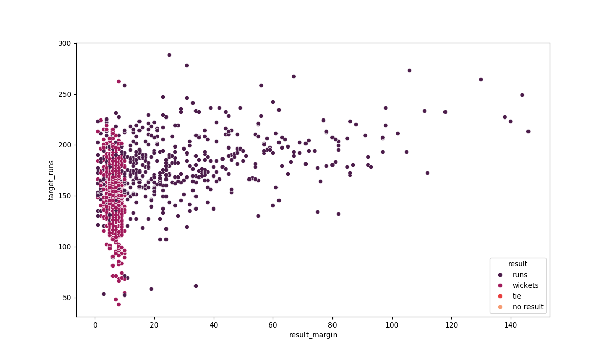

Insights from Cricket Matches
Scatter Plot of Target Runs vs Result Margin
This scatter plot shows the relationship between the target runs and the result margin of the matches, categorized by the result of the match.
Target Runs vs Result Margin
This graph showcases the relationship between target runs and result margin, with different colors representing the result of the match.

Histogram of Target Runs by Season and Toss Decision
This histogram represents the distribution of target runs across different seasons, categorized by the toss decision.
Player of the Match Count
Number of times players won the player of the match award and also won the match
Histogram of Super Over Matches by Season
This histogram highlights the frequency of matches that went into a super over each season.
Win Count 2024
Win Count for each team in Last Four Seasons
This plot shows the win count for each team in the last four seasons.
Virat Kohli Player of the Match Performance
Performance of Virat Kohli when he was awarded the player of the match and won the game.
MS Dhoni Player of the Match Performance
<>Performance of MS Dhoni when he was awarded the player of the match and won the game.
Virat Kohli's Performance when Chasing
Virat Kohli's performance when Royal Challengers Bangalore chose to field and won the game.